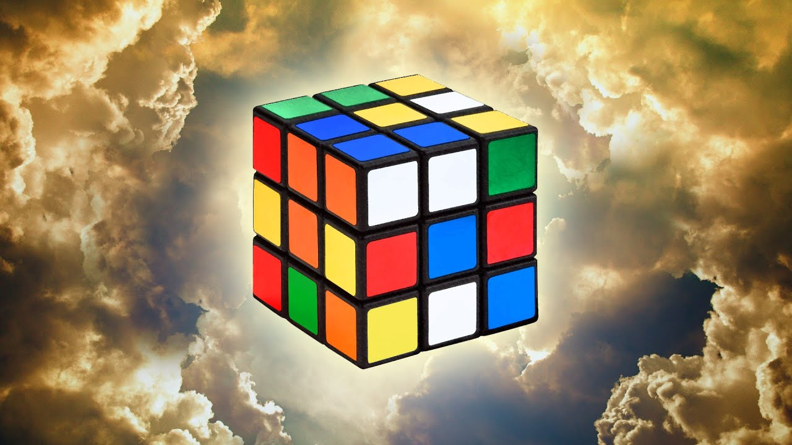

43 quintillion! That's how many permutations the 3x3 Rubik's Cube has. Though with God's number that number can be reduced dramatically. God's number is the minimum number of moves required to solve any scrambled configuration of the Rubik's Cube puzzle. It was first determined in 1981 by computer scientist Morwen Thistlethwaite, who developed a sophisticated algorithm to solve the cube. Thistlethwaite's algorithm involved dividing the cube into different subgroups based on certain characteristics, such as the number of pieces that were already in their correct positions. By solving each subgroup in turn, he was able to derive a set of "Thistlethwaite's moves" that could be used to solve the entire cube in the minimum number of moves possible.
Initially, Thistlethwaite's algorithm determined that God's number was 52, but subsequent refinements by other researchers and the use of more powerful computers led to the number being reduced over time. In 2008, a team of researchers at Northeastern University used an algorithm and a supercomputer to definitively determine that God's number was 20. Since then, there have been further refinements and reductions of God's number, with the current maximum number of moves required to solve any Rubik's Cube configuration being 26. Understanding God's number has helped researchers better understand the structure and complexity of the "simple puzzle".
